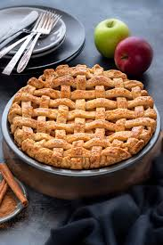

Apple Pie

This apple pie looks gorgeous; here's how to make it... Hm maybe I should have done Git commits and pushes while
doing this project as the tutorial said at some point.
Just like a good pumpkin pie or pecan pie, we all need an easy to make apple pie recipe. Whether you want to
serve a classic holiday dessert for your Thanksgiving or Christmas gathering or, you're just in the mood for the
irresistible taste of cinnamon and apples, this recipe will work.
Ingredients
- pie crust
- apples
- granualted sugar and brown sugar
- flour
- cinnamon, nutmeg
- lemon
- egg
Steps
- Peel and slice the apples then mix them with granulated sugar, brown sugar, flour, cinnamon, nutmeg, lemon
zest.
- Roll disc of pie crust into a circle and spoon the filling in it. Spread the apple slices evenly.
- Roll the second disc and place it over. Bake the pie at 400F for 25 minutes.
Home